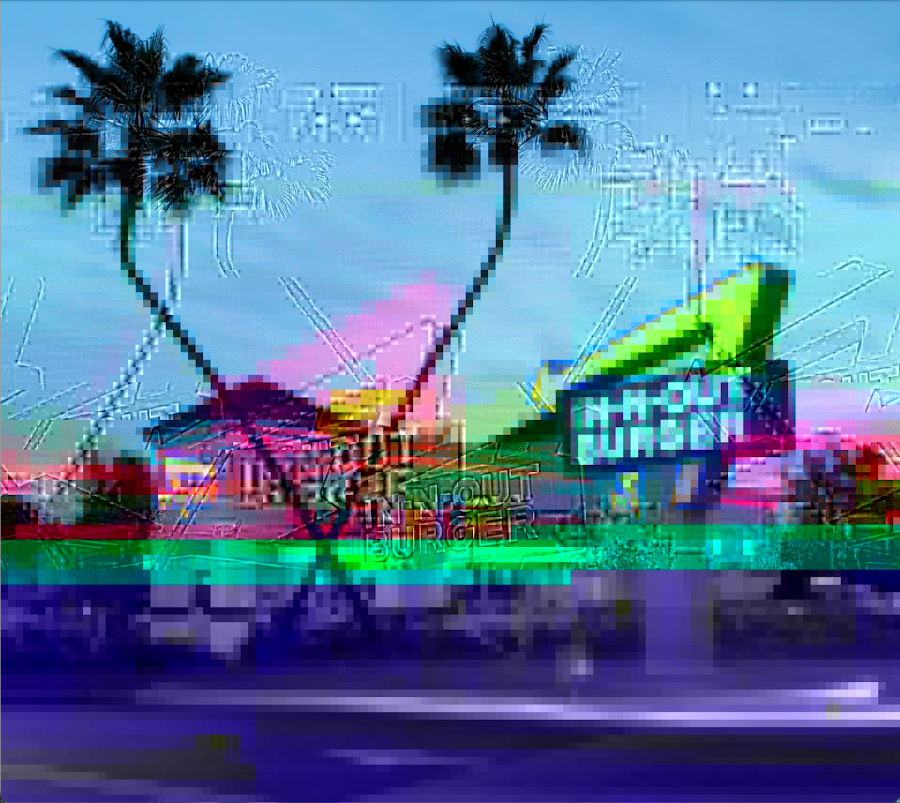
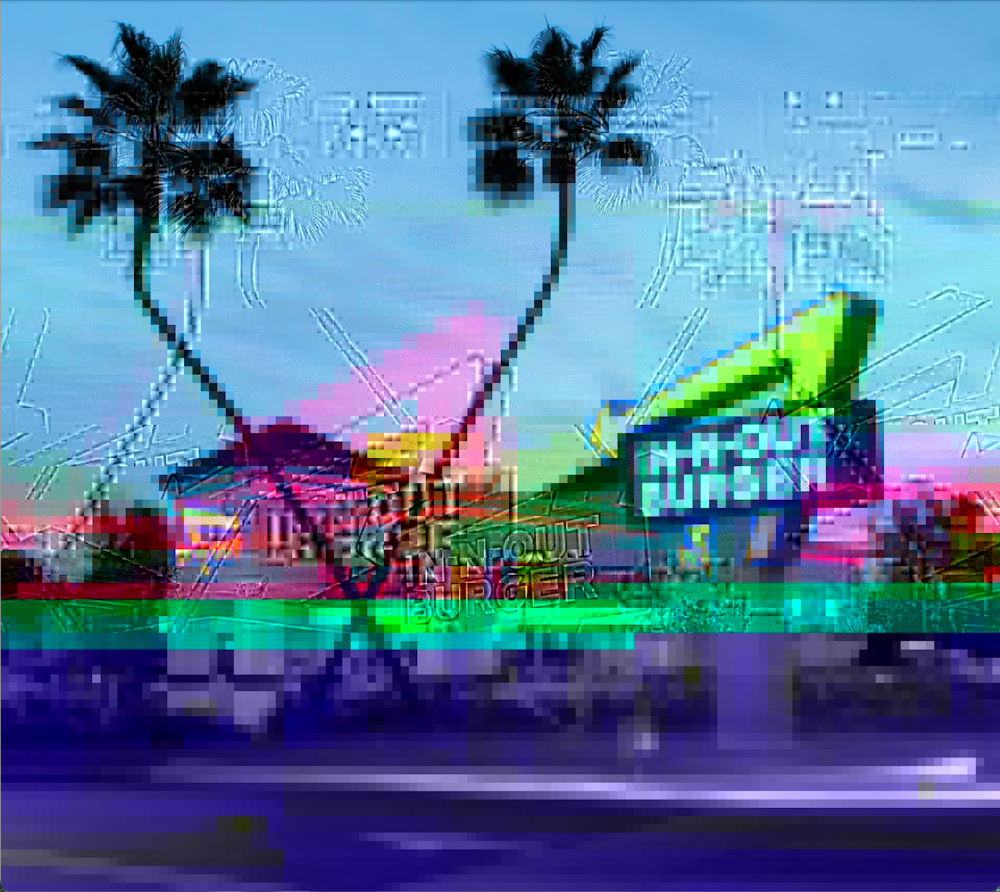
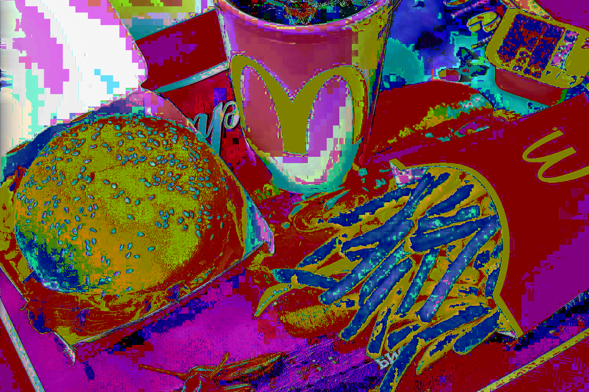
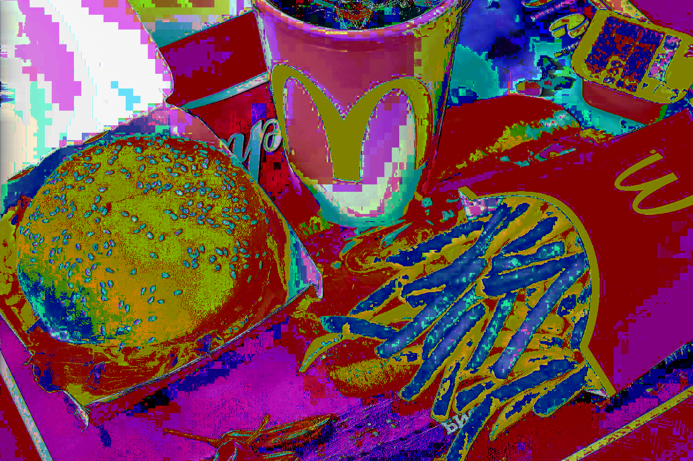

Fast Food Glitch
Glitch Art (2023)
Art 75 SJSU
 


 


Glitch Art is doing something unfamiliar with a piece of technology that you are familiar with. I made the following glitches by editing a .jpeg image file with either an audio editing or a text editing software. The audio editor I used was called Audacity and the text editor I used was called TextEdit. This series of images are related through the theme of fast food. Fast food advertisements always show their burgers and other food items as perfectly put together, and they make it look as appealing as possible. These glitches represent how the food in real life never actually looks like it does in the commercials. The glitch of fast food also represents the way that fast food is seen as unhealthy. However, I still left the images with a pleasing aesthetic because many people, including myself, enjoy eating fast food anyway.